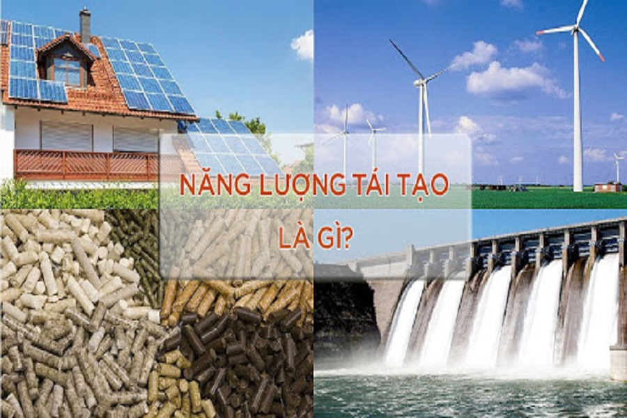

Thực hành: Khai thác thông tin số
Fossil fuels are running out. What can replace them?
Xăng, than đang cạn dần. Lấy gì thay thế?

Biến chủ đề thành các câu hỏi — đó chính là dàn ý của bài trình chiếu.
Xác định mức độ, yêu cầu cụ thể — bài trình chiếu khoảng 10 trang:
Group 3 needs the pros and cons of wind power. · Nhóm 3 cần ưu, nhược điểm của điện gió.
Specific keywords → better results. Từ khoá cụ thể → kết quả sát hơn.
Ghi chép kết quả tìm kiếm — Bảng 3.1 (SGK)
| # | ContentNội dung | WebsiteĐịa chỉ trang web | SourceNguồn gốc | YearThời gian |
|---|---|---|---|---|
| 1 | Khái niệm chung về các nguồn năng lượng | hvacr.vn/diendan/ | Cộng đồng Cơ Điện Lạnh Việt Nam | 2008 |
| 2 | Năng lượng tái tạo sẽ thống trị công suất điện toàn thế giới | www.evn.com.vn | Tập đoàn Điện lực Việt Nam | 2022 |
| 3 | Quy hoạch điện VIII: Ưu tiên phát triển năng lượng tái tạo | www.erea.gov.vn/vi-VN | Bộ Công Thương | 2021 |
….gov.vn = government site → more reliable than forums. Trang của cơ quan chính phủ đáng tin cậy hơn diễn đàn, trang web doanh nghiệp (Hình 3.1).
Trang “Nhà máy điện tương lai” nên dùng nguồn nào trong bảng ghi chép?
| Cơ cấu nguồn điện | 2030 | 2045 |
|---|---|---|
| Nhiệt điện than | 28% | 18% |
| Nhiệt điện khí | 19% | 24% |
| Thuỷ điện | 18% | 9% |
| Điện gió | 14% | 22% |
| Điện Mặt Trời | 13% | 20% |
| Điện sinh khối và NLTT khác | 2% | 2% |
| Thuỷ điện tích năng | 1% | 3% |
| Nhập khẩu điện | 5% | 2% |
Chọn phương tiện chia sẻ và giải thích theo 2 tiêu chí: dễ sử dụng · an toàn dữ liệu.
Để tìm hiểu cách sử dụng một chiếc máy ảnh mới, nguồn nào cần được tham khảo nhất?
Để tìm hiểu về một đội bóng đá ở châu Phi, nguồn nào đáng tin cậy nhất?